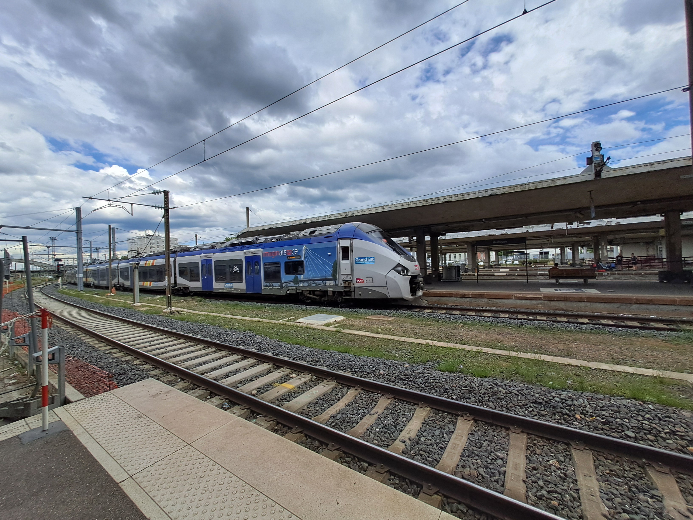
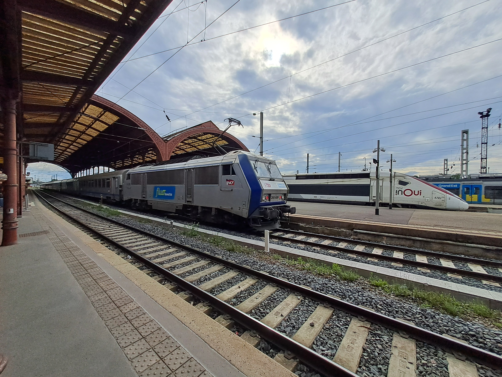

Le matériel ferroviaire moderne
Les TER 2nng (2 Niveaux Nouvelle Génération)

TER 2nng Rémi rénové en gare de Chartres

TER 2nng Pays-de-la-Loire en gare de Tours
Les AGC (Autorail Grande Capacitée)

AGC Alsace en gare de Mulhouse-Ville

AGC Champagne Ardennes en gare de Cernay

AGC Normandie (derrière) et Pays-de-la-Loire (devant) en gare du Mans

AGC Nouvelle Aquitaine à Saint-Pierre-des-Corps

AGC Pays-de-la-Loire en gare de Tours
Les Régio 2N (Rames Régionales 2 Niveaux)

Régio 2N Pays-de-la-Loire en gare de Tours

Régio 2N Centre-Val-de-Loire en gare de Chartres


Régio 2n dit Omnéo Prénium Rémi en gare de Tours, assurant les liaison Rémi express
Les Régiolis
Régiolis Grand-Est en gare de Mulhouse

Régiolis Nouvelle-Aquitaine en gare de Tours

Regiolis version intercités: Coradia Liner, en gare de Saint-Pierre-des-Corps
Les A TER ou X 73500

A TER Centre en gare de Tours

A TER Pays-de-la-Loire et Nouvelle-Aquitaine en gare de Tours
Les anciens autorails

X TER Centre en gare de Tours

Z 21000 Rémi Rénové en gare de Tours
Les corails

Voiture pilote d'un Corail livrée Grand-Est en gare de Mulhouse
Corail livrée Grand-Est tracté par une locomotive Sybic (BB 26000), en gare de Strasbourg

Une voiture Corail